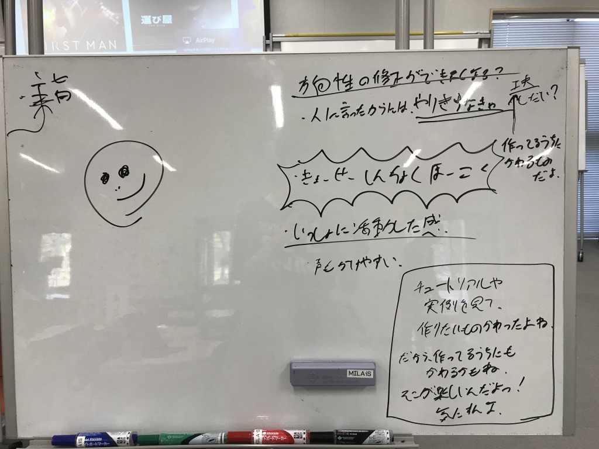

このゼミのまとめスライド
ゼミのPDF
なぜこのスライドを作ったのか
- バイト先「つなぐカフェ＠飯塚」で、学生同士の学び合いを促すゼミを行うことになった。
- 一般の方にも公開したゼミでした。その告知のフライヤーは こちら です。
- 題材は「エンジニアの知的生産術」(西尾泰和, 株式会社技術評論社, 2018)
- 吉田は、この本の中でも「アイデアを思いつくには」の章を担当しました。
準備や本番を通して得たもの
U理論の知見
- U理論の概要を以下に示す(ゼミスライド7枚目)
- U理論は組織が新しいものを生み出すプロセスを、理論にしたもの。
- 意識状態として、閃きが起きやすい状況とはどういうものかの定義
- どうすればそのような状態に至れるのかの道筋
- 著者の西尾さん曰く、U理論は三つの壁を言語化したことが重要(https://scrapbox.io/nishio/U%E7%90%86%E8%AB%96)
- Voice of Judgement … 一方的に相手の意見を決めつける「判断」の声
- Voice of Cynicism … 相手の言いたいことはわかったが、共感はしていない「皮肉」の声
- Voice of Fear … 相手と十分な相互の理解は得られ、その結果、新しいアイデアや新しい組み合わせを思いつきつつあるが、今までと全く違うことを実行することを「恐れている」声
- そして、この三つの壁を超えた時に、閃きが起きやすい状況にいたることができる
吉田の体験談
U理論について知った後で、確かにU理論は正しそうだと感じたエピソードがあったので、紹介します。
レトロゲームを作ってみようの会準備
イベント自体については こちら
「作りたいものが途中で変わるかも知れないけれど、それってありだよね」ということを伝える勉強会にしようとは決めていた。
- 作りたいものを紙に書いて整理しつつ、整理したことによる変化を促すなど
しかし、それだけでは「変化することはむしろいいことだ」という考えが伝わりきれないとも感じていた。
バイト仲間と互いの主張の背景がわかるまで議論を重ねた。
- 紙に書くだけではなく、話した方が、意図がまとまるのでは？
- 「学びは一人でやるものじゃない」という主旨も入れたほうがいいのでは？
- このように、手段ばかりが議論に上がるが、本質的な解決ができない
途中でふと、「変化するのはいいことだよ、とイベント中に普通に言えばいいのでは？」という意見が上がった
- 確かに、それで十分
- 吉田の実体験もある
それを取り入れて、スライドが完成した
議論のホワイトボード

#####まとめ - おそらく、どこかの時点でUの谷を潜っていったのだと思う。 - 感覚としては潜っている気がするのだが、具体的にどこで切り替わったとはわからない - が、「今、Voice of Judgementだな…」などと自分を客観的に見る指標として有効であることがわかった